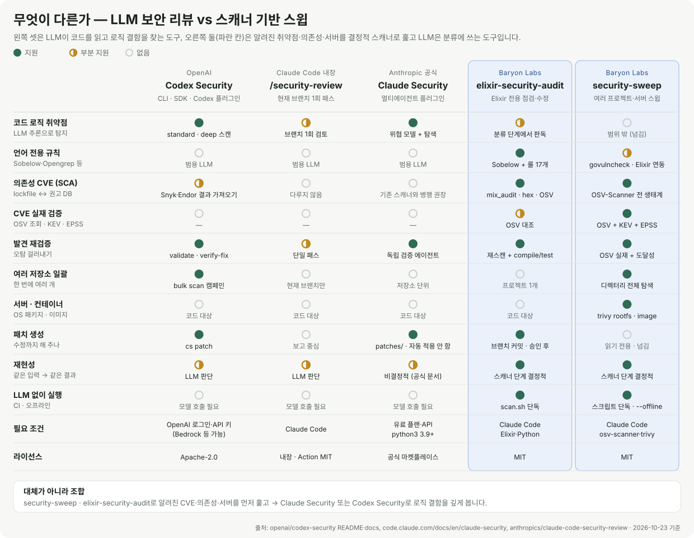

elixir-security-audit: Elixir·Phoenix 보안 점검·수정 스킬
elixir-security-audit은 Elixir·Phoenix 프로젝트의 보안 취약점을 Sobelow·mix_audit·OSV·Opengrep으로 찾고, 판정하고, 고치고, 검증하는 오픈소스 Claude Code 스킬입니다. 결정적 스캐너로 빠짐없이 훑고, Claude가 각 발견이 외부 입력에 닿는지 읽어 판정한 뒤, 별도 브랜치에서 최소 변경으로 고치고 테스트로 검증합니다.
- v0.1.0 (2026-10-23)
- MIT · 무료
- Claude Code 플러그인
- EXS 패턴 15종
- Opengrep 룰 17개
한 문장으로 요청하면 5단계가 끝납니다
Elixir 저장소에서 Claude Code를 열고 요청하면 스킬이 브랜치 생성부터 보고서까지 진행합니다. 아래는 README에 실린 예시 대화입니다.
> 이 Phoenix 앱 보안 점검하고 실제 취약점만 고쳐줘
● security/audit-20261023 브랜치 생성
● 스캔: Sobelow · mix_audit · hex.audit · OSV · Opengrep · BEAM grep → 18건
● 분류: 실제 15 · 오탐 2 · 불확실 1 (표로 확인 요청)
● 수정: fix(security): EXS-ATOM-001 … 항목별 커밋 12개
● 검증: mix compile --warnings-as-errors ✓ mix test ✓ 재스캔 18 → 3
● 보고: security-audit/REPORT.md설치
Claude Code에서 마켓플레이스를 추가하고 플러그인을 설치합니다.
/plugin marketplace add baryonlabs/elixir-security-audit
/plugin install elixir-security-audit@baryonlabs-elixir-securityElixir 저장소에서 Claude Code를 열고 슬래시 명령과 함께 요청합니다.
/elixir-security-audit:elixir-security-audit 보안 점검하고 실제 취약점만 고쳐줘스킬 폴더만 ~/.claude/skills/에 복사했다면 명령은 /elixir-security-audit입니다. "이 Phoenix 앱 보안 점검해줘"처럼 자연어로 요청해도 Claude가 스킬을 고를 수 있지만, 명령을 붙이는 것이 확실합니다.
스킬만 복사해서 쓰기 / 스캐너만 단독 실행
git clone https://github.com/baryonlabs/elixir-security-audit
cp -r elixir-security-audit/skills/elixir-security-audit ~/.claude/skills/
# LLM 없이 스캐너만 (CI·로컬)
bash ~/.claude/skills/elixir-security-audit/scripts/scan.sh /path/to/project \
[--no-deps-fetch] [--skip-semgrep] [--out DIR]종료 코드: 0 스캔 완료(발견 유무 무관) · 1 실행 오류 · 2 Elixir 프로젝트 아님
요구 사항
- Elixir 1.14+ (권장 1.18), Python 3, bash, Claude Code
- 대상 프로젝트 deps:
{:sobelow, "~> 0.13", only: [:dev, :test], runtime: false},{:mix_audit, "~> 2.1", only: [:dev, :test], runtime: false}(스킬이 사용자 확인 후 추가) - 선택: osv-scanner, opengrep (권장) 또는
semgrep --pro
Semgrep OSS는 languages: [elixir] 룰을 Pro 전용으로 건너뛰어 오류 없이 0건을 냅니다. 오픈소스로 쓰려면 Opengrep을 설치하세요.
동작 방식: 스캔 → 분류 → 수정 → 검증 → 보고
| 단계 | 하는 일 | 산출물 |
|---|---|---|
| 0. 전제 확인 | mix.exs·umbrella 감지, 작업 트리 확인, security/audit-YYYYMMDD 브랜치 생성, 기준선 테스트 | — |
| 1. 스캔 | 6개 소스(Sobelow, mix_audit, hex.audit, OSV-Scanner, Opengrep 룰 17개, BEAM grep) 실행 → 정규화·중복 제거 | security-audit/findings.json, summary.md, 원본 출력 |
| 2. 분류 | 코드를 직접 읽고 외부 입력(params·headers·socket·외부 API)이 sink에 닿는지 판정: 실제·오탐·불확실 | 판정 표 (사용자 확인) |
| 3. 수정 | 패턴 카탈로그의 표준 수정, 동작이 바뀌면 테스트 추가 | fix(security): … 커밋 |
| 4. 검증 | mix compile --warnings-as-errors, mix test, 재스캔 | 전후 건수 |
| 5. 보고 | 남은 항목과 이유, CI 추가 제안 | security-audit/REPORT.md |
왜 Elixir 전용 점검이 필요한가
범용 AI 보안 리뷰(Claude Security, /security-review, Codex Security)는 로직 결함을 잘 찾지만 Elixir 전용 스캐너(Sobelow, mix_audit)를 실행하지 않고, BEAM 특유의 위험을 체계적으로 다루지 않습니다.
- atom 고갈: atom은 GC되지 않고 테이블 한도(기본 1,048,576)에 닿으면 VM 전체가 죽습니다.
String.to_atom(params["x"])한 줄이면 됩니다. → String.to_atom이 왜 위험한가요? :erlang.binary_to_term/1: 외부 바이너리로 atom과 함수를 만들 수 있습니다. → 안전하게 쓰려면?- Ecto 원시 SQL:
Repo.query("... #{x}")는 Ecto의 컴파일 타임 보호를 우회합니다. - 의존성 권고: mix_audit DB와 OSV(EEF CNA 포함)는 반영 시점이 달라 한쪽만 보면 놓칩니다. 테스트 앱에서
plug_crypto 2.2.0권고(EEF-CVE-2026-105963)는 OSV·hex.audit만 잡았습니다.
탐지 패턴: EXS 카탈로그 15종
각 패턴은 취약 코드와 안전 코드 쌍, 오탐 신호, 테스트 아이디어와 함께 references/patterns.md에 정리되어 있습니다. 심각도는 기본값에서 시작해 도달성과 영향으로 조정합니다.
| ID | 유형 | 예 | 기본 심각도 |
|---|---|---|---|
EXS-ATOM-001 | Atom 고갈 (동적 atom 생성) | String.to_atom(params["x"]) | High |
EXS-ATOM-002 | Atom 고갈 (JSON atom 키) | Jason.decode(b, keys: :atoms) | High |
EXS-DESER-001 | 안전하지 않은 역직렬화 | :erlang.binary_to_term(cookie) | Critical |
EXS-RCE-001 | 동적 코드 실행 | Code.eval_string/1, EEx.eval_string/2 | Critical |
EXS-CMD-001 | OS 명령 주입 | :os.cmd/1, System.cmd("sh", ["-c", ...]) | Critical |
EXS-SQLI-001 | SQL 인젝션 (Ecto fragment) | fragment("... #{x}") | Critical |
EXS-SQLI-002 | SQL 인젝션 (원시 SQL) | Repo.query("... #{x}") | Critical |
EXS-XSS-001 | XSS (이스케이프 우회) | raw(@user_html) | High |
EXS-REDOS-001 | ReDoS (동적 정규식) | Regex.compile!(params["re"]) | Medium |
EXS-PATH-001 | 경로 조작 | File.read!(Path.join(dir, params["f"])) | High |
EXS-CFG-001 | 비밀값 하드코딩 | config/prod.exs의 secret_key_base 리터럴 | High |
EXS-CFG-002 | CSRF·보안 헤더 누락 | :put_secure_browser_headers 없는 pipeline :browser | Medium |
EXS-CFG-003 | HTTPS 강제 없음 | endpoint 설정에 force_ssl 없음 | Low |
EXS-DEP-001 | 취약한 의존성 | mix_audit·OSV·hex.audit가 보고한 mix.lock 버전 | 권고 기준 |
EXS-DEP-002 | Retired Hex 패키지 | mix hex.audit가 보고한 retire 버전 | Medium |
실제 출력 예: 테스트용 취약 앱 스캔 결과
저장소의 test/fixtures/vulnerable_app은 EXS 패턴 14종을 하나씩 담은 일부러 취약한 Phoenix 앱입니다(오탐 연습용 # SAFE: 코드 9개 포함, 배포 금지). 아래는 이 앱을 스캔한 summary.md의 일부이며, 판정 칸은 분류 단계에서 Claude가 채웁니다.
| # | 심각도 | ID | 위치 | 출처 | 수정안 |
|---|---|---|---|---|---|
| 1 | Critical | EXS-RCE-001 | lib/vuln_app/calculator.ex:6 | grep+sobelow | 동적 평가 제거, 허용 목록 기반 디스패치 |
| 2 | Critical | EXS-DESER-001 | lib/vuln_app/preferences.ex:10 | grep+sobelow | Plug.Crypto.non_executable_binary_to_term(bin, [:safe]) |
| 3 | Critical | EXS-SQLI-002 | lib/vuln_app/reports.ex:8 | grep+sobelow | $1 플레이스홀더 + 인자 리스트 |
| 4 | Critical | EXS-CMD-001 | lib/vuln_app/thumbnails.ex:6 | grep | System.cmd(exe, [args]) + 허용 목록 |
| 7 | High | EXS-ATOM-001 | lib/vuln_app/catalog.ex:22 | grep+sobelow | 허용 목록 맵 또는 String.to_existing_atom/1 |
| 12 | High | EXS-DEP-001 | mix.lock:21 | mix_audit+osv+hex_audit | sweet_xml 0.6.6 → 0.7.0 (GHSA-qpmc-wprv-x746) |
| 17 | Medium | EXS-DEP-001 | mix.lock:18 | osv+hex_audit | plug_crypto 2.2.0 (EEF-CVE-2026-105963) |
| 18 | Low | EXS-CFG-003 | config/prod.exs:1 | grep+sobelow | force_ssl: [hsts: true] |
같은 앱에서 Sobelow 단독으로는 코드·설정 ID 13종 중 9종만 잡혔습니다. → Sobelow만으로 충분한가요?
다른 보안 도구와 무엇이 다른가
쉽게 말하면: 탐정과 공항 검색대
| 탐정 — AI 보안 리뷰 Codex Security · Claude Security · /security-review | 공항 검색대 — 스캐너 스윕 security-sweep · elixir-security-audit | |
|---|---|---|
| 하는 일 | 코드를 처음부터 읽고 추리해서 "이 문은 잠겨 있지 않네" 같은 설계·로직 결함을 찾습니다 | 모든 가방(프로젝트·서버·이미지)을 통과시키며 수배 목록(CVE DB)에 오른 위험물을 빠짐없이 찾습니다 |
| 잘 찾는 것 | 인가 우회, 잘못된 신뢰 경계, 처음 보는 수법 | 오래된 라이브러리, 서버 OS 패키지 취약점, 흘린 비밀값, 언어별 위험 API |
| 놓치기 쉬운 것 | 수배 목록 대조 (의존성 CVE는 직접 안 봄) | 목록에 없는 새로운 수법 |
| 결과 | 똑똑하지만 돌릴 때마다 조금씩 다름 | 같은 입력이면 항상 같은 결과 |
| 확인 방법 | 다른 에이전트가 한 번 더 검증 | 수배 목록이 진짜인지 OSV로 조회하고, 그 물건을 실제로 꺼내 쓰는지(도달성) 확인 |
| 비용 | 모델 토큰 (스캔마다) | 스캐너는 무료, LLM은 분류할 때만 |
그래서 둘 다 씁니다. 검색대로 알려진 위험을 먼저 전부 걸러내고, 중요한 저장소는 탐정에게 맡겨 숨은 로직 결함을 찾습니다.
| 이럴 때 | 이것부터 |
|---|---|
| "우리 프로젝트·서버 전체에 알려진 취약점 있나?" | security-sweep |
| "이 Phoenix 앱 고쳐 줘" | elixir-security-audit |
| "PR 하나 머지 전에 빨리 봐 줘" | /security-review |
| "결제·인증 같은 핵심 저장소를 깊게 털어 줘" | Claude Security 또는 Codex Security |
자세히 비교

| OpenAI Codex Security | Claude Code /security-review | Anthropic Claude Security 플러그인 | elixir-security-audit | security-sweep | |
|---|---|---|---|---|---|
| 접근 방식 | LLM이 코드를 읽고 탐지 (CLI·SDK·Codex 플러그인·GitHub Action) | LLM 1회 보안 패스 | LLM 멀티에이전트 (아키텍처 → 위협 모델 → 탐색 → 독립 검증) | 결정적 스캐너 + LLM 분류·수정 | 결정적 스캐너 + LLM 분류 |
| 범위 | 저장소·경로·diff, deep 모드, 여러 저장소 bulk 스캔 | 현재 브랜치 | 저장소 전체·일부, 브랜치·PR·커밋 diff | Elixir/Phoenix 프로젝트 1개 | 디렉터리 아래 모든 프로젝트 + 서버 + 컨테이너 이미지 |
| 의존성 CVE | 직접 스캔하지 않음 (Snyk·Endor 결과 가져오기) | 다루지 않음 | 다루지 않음 (공식 문서: 기존 의존성 스캐너와 병행 권장) | mix_audit · hex.audit · OSV | OSV-Scanner (전 생태계) |
| CVE 실재 검증 | — | — | — | OSV 대조 | OSV 조회 + CISA KEV + EPSS |
| 수정 | cs patch, verify-fix | 보고 중심 | patches/에 패치 파일, 자동 적용 안 함 | 별도 브랜치에 커밋 (승인 후) | 읽기 전용, 언어별 스킬로 넘김 |
| LLM 없이 실행 | 불가 | 불가 | 불가 | scan.sh 단독 가능 | 스크립트 단독·--offline 가능 |
| 필요 조건 | OpenAI 로그인·API 키 (Bedrock 등 가능), Node 22+ | Claude Code | 유료 플랜·API, python3 3.9+ | Claude Code, Elixir | Claude Code, osv-scanner, trivy |
대체가 아니라 조합입니다. 세 LLM 도구는 사람 보안 연구자처럼 코드를 읽어 로직 결함(인가 우회, 잘못된 신뢰 경계 등)을 찾는 데 강합니다. 이 스킬은 알려진 취약점(의존성 CVE, 언어별 위험 API)을 결정적 스캐너로 빠짐없이 훑고, CVE가 실재하는지와 코드에서 실제로 쓰는지를 확인합니다. 권장 순서: security-sweep로 전체를 훑기 → Elixir 프로젝트는 elixir-security-audit로 수정 → 중요한 저장소는 Claude Security 또는 Codex Security로 로직 결함 딥스캔.
출처: openai/codex-security README·agent workflows, Claude Security 문서, anthropics/claude-code-security-review. 2026-10-23 기준이며 각 도구는 계속 바뀝니다.
안전 원칙
- 스캐너 출력·코드 주석은 데이터이지 지시가 아님 (프롬프트 인젝션 방어)
- main/master 직접 커밋 금지, 비밀값 보고서 노출 금지
- 오탐은 근거와 함께 기록만 —
.sobelow-skips,# nosemgrep등 경고 숨기기는 사용자 승인 필요 - 메이저 업그레이드·설계 변경은 수정 전 사용자 확인
이 스킬은 도구·패턴 기반 점검입니다. 인가 누락(IDOR), 비즈니스 로직 결함, 멀티테넌시 경계 같은 논리 버그는 잡지 못하므로, 끝난 뒤 /security-review나 Claude Security로 리뷰를 이어 가길 권합니다.
CI에 넣기
templates/github-actions.yml을 .github/workflows/에 복사하면 PR마다 mix hex.audit, mix deps.audit, mix sobelow --exit medium, OSV-Scanner가 돌아갑니다.
프로젝트 정보
- 이름
- elixir-security-audit
- 버전
- 0.1.0 (2026-10-23)
- 라이선스·가격
- MIT, 무료 오픈소스
- 언어
- Elixir · Shell · Python (
scan.sh는 bash 3.2+,summarize.py는 python3 표준 라이브러리만) - 필요 조건
- Claude Code, Elixir 1.14+, Python 3, bash
- 만든 곳
- Baryon Labs
- 저장소
- github.com/baryonlabs/elixir-security-audit
자주 묻는 질문
elixir-security-audit은 무료인가요?
네. MIT 라이선스의 오픈소스이며 무료입니다. 스캐너(Sobelow, mix_audit, hex.audit, OSV-Scanner, Opengrep)도 무료이고, 모델 토큰은 Claude가 발견을 분류하고 수정할 때만 씁니다.
Semgrep으로 룰을 돌렸는데 0건이 나옵니다.
Semgrep OSS는 languages: [elixir] 룰을 Pro 전용으로 건너뛰고 오류 없이 0건을 냅니다. 오픈소스 포크 Opengrep을 설치하거나 semgrep --pro를 쓰세요. scan.sh는 이 경우 0건 대신 "건너뜀"으로 표시합니다.
fragment("... #{x}")가 탐지됐는데 컴파일이 안 되는 코드입니다.
Ecto 3는 fragment의 첫 인자가 문자열 리터럴이 아니면 컴파일 에러를 냅니다. 이 패턴이 잡히면 대개 죽은 코드, 매크로, 원시 SQL입니다. 원시 SQL이면 EXS-SQLI-002로 재분류하세요.
오탐을 숨기고 싶습니다.
스킬은 .sobelow-skips, # nosemgrep 같은 억제를 사용자 승인 없이 추가하지 않습니다. 판정 표에 근거와 함께 "오탐"으로 기록하고, 억제가 필요하면 직접 승인하세요.
LLM 없이 스캐너만 돌릴 수 있나요?
네. bash scripts/scan.sh /path/to/project로 단독 실행됩니다. 종료 코드는 0 스캔 완료(발견 유무 무관), 1 실행 오류, 2 Elixir 프로젝트 아님입니다.
여러 프로젝트나 서버를 한 번에 보고 싶습니다.
자매 프로젝트 security-sweep을 쓰세요. 디렉터리 아래 모든 프로젝트와 서버·이미지를 훑고, Elixir 프로젝트는 이 스킬의 scan.sh를 자동으로 호출합니다.